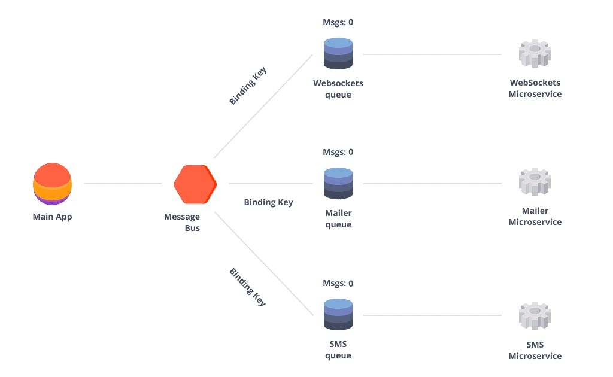

What are microservices?
Microservices - also known as the microservice architecture - is an architectural style that structures an application as a collection of services that are
- Highly maintainable and testable
- Loosely coupled
- Independently deployable
- Organized around business capabilities
- Owned by a small team
The microservice architecture enables the rapid, frequent and reliable delivery of large, complex applications. It also enables an organization to evolve its technology stack.
When should we use Microservices?
Any architectural style has trade-offs: strengths and weaknesses that we must evaluate according to the context that it's used. This is certainly the case with microservices. While it's a useful architecture - many, indeed most, situations would do better with a monolith.
Microservices provide benefits…
- Strong Module Boundaries: Microservices reinforce modular structure, which is particularly important for larger teams.
- Independent Deployment: Simple services are easier to deploy, and since they are autonomous, are less likely to cause system failures when they go wrong.
- Technology Diversity: With microservices you can mix multiple languages, development frameworks and data-storage technologies.
…but come with costs
- Distribution: Distributed systems are harder to program, since remote calls are slow and are always at risk of failure.
- Eventual Consistency: Maintaining strong consistency is extremely difficult for a distributed system, which means everyone has to manage eventual consistency.
- Operational Complexity: You need a mature operations team to manage lots of services, which are being redeployed regularly.
Please leave a comment!